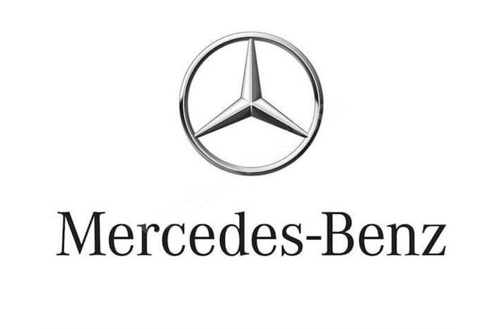

|
 |
 |  |
Audi e-tron GT, otomobil devi Audi’nin elektrikli otomobilleri içerisinde en dikkat çekici modellerden biri. Yüksek teknoloji ile donatılan iç mekânı, sportif ve çevik dış görünümü, kolay şarj imkânı ile Audi e-tron GT, markanın elektrikli otomobil piyasasındaki yüksek performanslı modelleri arasında. Aynı zamanda sıfır CO2 emisyonu ile de çevre dostu. Audi e-tron GT özellikleri, teknik değerleri ve çok daha fazlasını siz de içeriğimizde keşfedebilir, model hakkındaki tüm sorularınıza yanıt alabilirsiniz.
Jeep, sınıfının öncüsü modellerinden biri olan Renegade’in 2023 e-Hybrid versiyonu ile karşımıza çıkıyor. Jeep’in ikonik tasarımı ve performansını hibrit teknolojisiyle birleştiren Renegade e-Hybrid, otomobil dünyasında çığır açıyor. Hem çevre dostu hem de sürüş keyfini üst düzeye taşıyan bu model, merak uyandıran bir dizi özellikle donatılmış durumda. Bu araç, sadece etkileyici off-road kabiliyetleriyle değil, aynı zamanda çevre dostu bir yaklaşım sunarak da dikkat çekiyor. Longitude ve Limited olmak üzere iki donanım paketiyle satışa sunuluyor.